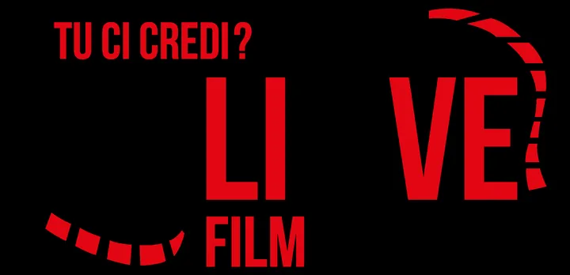

da gio 15 ott a dom 18 ott
Believe Film Festival
Dal 15 al 18 ottobre ritorna una nuova edizione del Believe Film Festival , giunto alla IX° edizione.
 Indicazioni
Indicazioni
- Costi e prenotazioni
- Costo non indicato · Prenotazione non indicata
- Programma
- Programma da verificare. Apri la fonte ufficiale per orari e possibili aggiornamenti.
- In caso di maltempo
- Nessuna indicazione specifica pubblicata.
- Note
- Acquisito automaticamente dalla fonte.
L’EVENTO
Descrizione completa
Dal 15 al 18 ottobre ritorna una nuova edizione del Believe Film Festival , giunto alla IX° edizione.
Verona per un weekend diventa la capitale del cinema giovane con il più importante appuntamento italiano dedicato ai giovani autori under 24. Un evento che unisce cinema, formazione e networking, dando spazio al talento emergente e ai nuovi linguaggi dell’audiovisivo, per far emergere i talenti del futuro.
Le proiezioni, gli incontri e i workshop si terranno principalmente al prestigioso Teatro Ristori e nelle altre sale partner della città, con un programma ricco che trasformerà Verona in un grande set diffuso.
Il cuore pulsante del Festival è la Selezione Ufficiale , che quest’anno presenta sei titoli intensi e diversissimi tra loro: " Uscito a riveder le stelle ” di Sophia Lassi, " Salti nel vuoto " di Pietro Zuntini, " Qualcosa di più grande " di Francesco Guerriero, " Non abbastanza " di Matteo Fraioli, " Dragonflies " di Anita Cazzalini e " Domani tutto bene " di Edoardo Paganelli.
Oltre alla categoria della selezione ufficiale, si affiancano anche la sezione “ esordienti ”, dedicata alle opere di registi di età compresa tra i 14 e i 18 anni, la sezione " fuori concorso ", con incontri con le crew per dare voce anche a chi porta al Festival lavori sperimentali, originali o indipendenti e la sezione " Believe Extra ".
Il Believe Film Festival è un progetto di Believe APS, realizzato con il patrocinio e il contributo della Regione del Veneto e del Comune di Verona, con il contributo della Camera di Commercio di Verona, con il patrocinio di Ministero della Cultura, ACEC, Veneto Film Commission, Fondazione Ente dello Spettacolo e NuovoIMAIE.
IL PROGRAMMA
Programma e orari
Appuntamenti raccolti dalle fonti elencate. Dove manca un orario, non è ancora disponibile in questa scheda.
Programma pubblicato
- 2026-10-15 — 2026-10-17 · 14:30:00
- 2026-10-18 — 2026-10-18 · 10:00:00
INFORMAZIONI UTILI
Prima di partire
- Controllare la fonte prima di partire.
ORGANIZZAZIONE